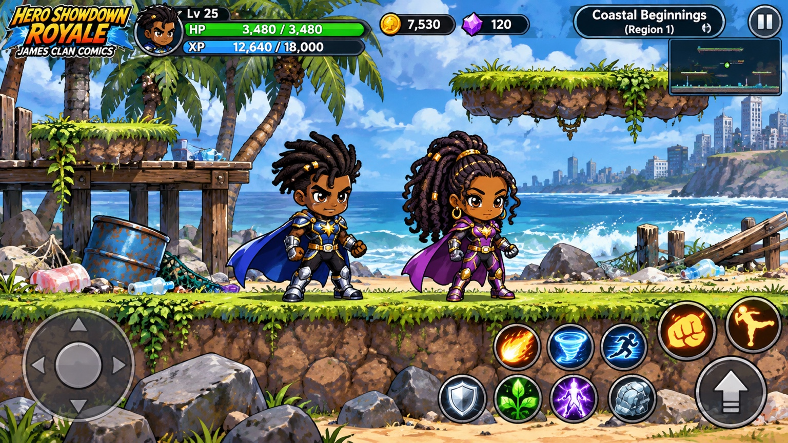
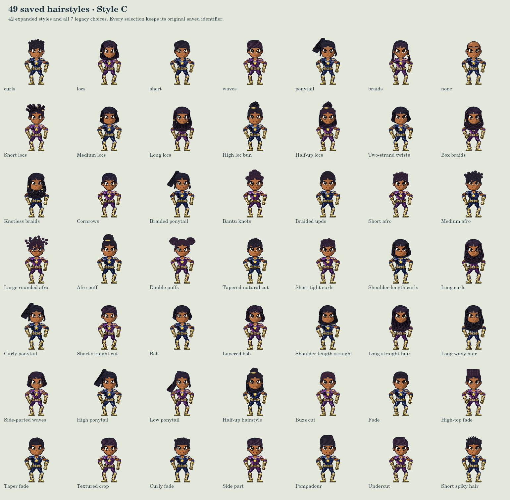

Style C playtest
Take either hero onto the coast. You start at level 15 with every power learned, five Power Points and one open slot. Tap + to equip a power, then tap its button to use it.
Each practice hero has a separate save in this tab. Your regular hero slots stay separate.
Approved Style C reference

This exact uploaded reference supplies the character RGB. Compare the default faces, proportions and costumes at game scale.Live character preview
Loading new character artwork…Customize the review hero
These previews use the same saved appearance options as the game. They do not overwrite your hero slots.
Try it at the real game scale
Choose an example and start a disposable practice hero. This uses the normal game, its integrated monsters, original camera, menus and controls.
Ready. Left/right arrows move · Space jump · J punch · K kick · E pickup · Up portal.
Reference, close-ups and actual game camera comparison
Movement previews
Idle, walking, running, punching and kicking from the actual character renderer. These are articulation prototypes. Visible joint gaps, cutout edges and cape motion still need correction; they are not a completed exact animation match.


All 49 hairstyles

Browser checks and measured performance
Runs on this browser. A phone-sized viewport is not a physical phone performance test.
Not run.
Not measured.